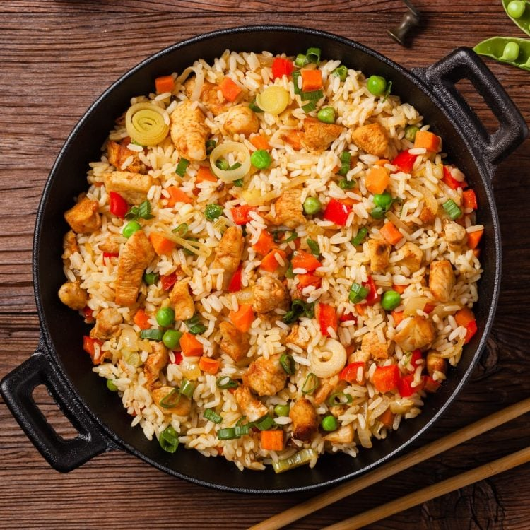

Chicken Fried Rice

Chicken fried rice is a classic dish made by stir-frying cooked rice with diced chicken, vegetables , and eggs in a wok or skillet. Seasoned with soy sauce, oyster sauce, and other spices,it offers a flavorful combination of tender chicken, fluffy rice, and crunchy vegetables, making it a popular choice for a quick and satisfying meal.
Ingredients:
- 3 cups Rice (cooked, or 1/2 cup uncooked rice)
- add Salt (as needed)
- 1tablespoon Garlic (chopped)
- 1 tablespoon Soya Sauce (organic, adjust to taste)
- ¼ teaspoon Pepper (crushed, or pepper)
- 2 tablespoons Oil
- 2 Green Chilies (optional, or any hot sauce as desired)
- 2 sprigs Spring Onions (or scallions, or 1 small onion, greens & whites separated)
- ½ cup Bell Peppers (chopped)
- 150 grams Chicken (chopped to bite size)
- 1 Egg (or 3/4 tbsp corn starch or brine, refer notes)
- ½ teaspoon Soya Sauce
- 1 large pinch Salt
- 1 large pinch Pepper (crushed, or powder)
Method:
- Cook rice according to package instructions. Allow it to cool.
- In a small bowl, beat the egg with soy sauce, salt, and pepper.
- Heat oil in a wok or large skillet over medium-high heat. Add the egg mixture and scramble until cooked. Remove from the wok and set aside.
- In the same wok, add a little more oil if needed. Stir-fry garlic, green chilies, and white parts of spring onions until fragrant.
- Add chicken and stir-fry until cooked through.
- Add bell peppers and green parts of spring onions. Cook until slightly softened.
- Add cooked rice and stir-fry everything together, breaking up any clumps of rice.
- Drizzle with soy sauce and oyster sauce. Stir well to combine.
- Return the scrambled eggs to the wok. Stir until everything is heated through.
- Adjust seasoning with salt, pepper, or additional soy sauce if needed.
- Serve hot, garnished with chopped spring onions if desired.